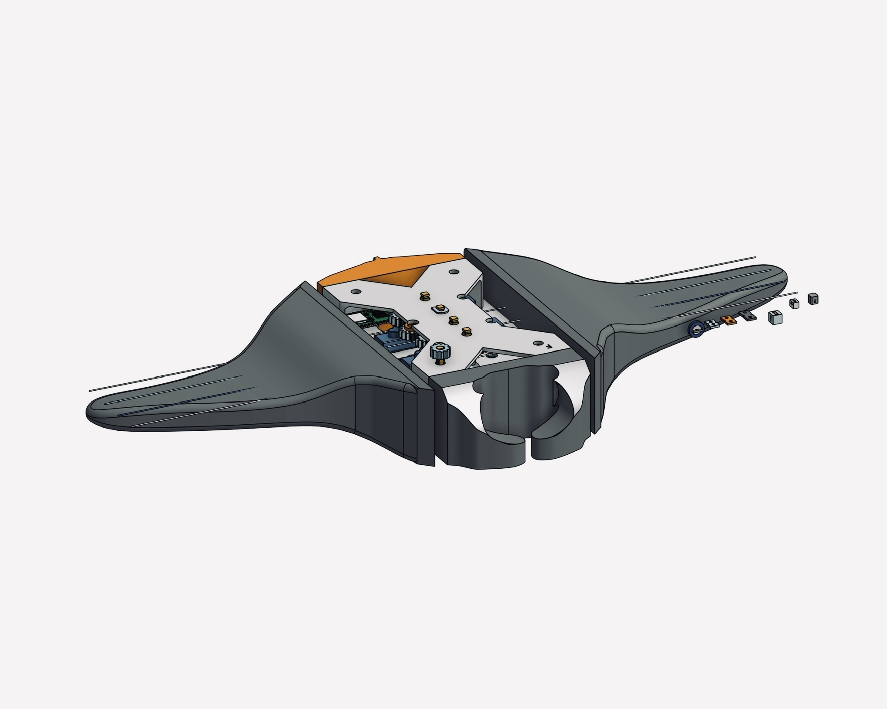
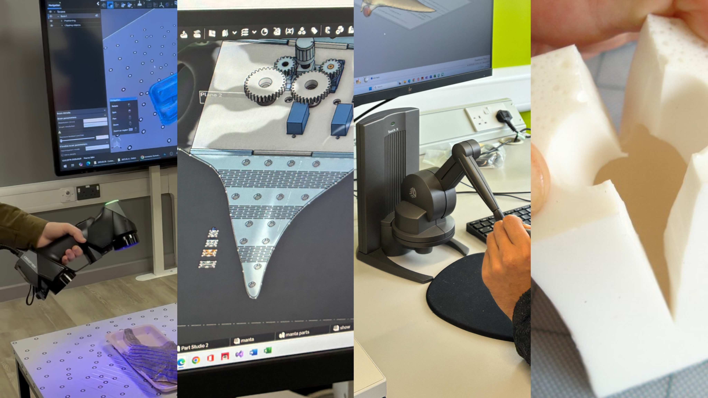
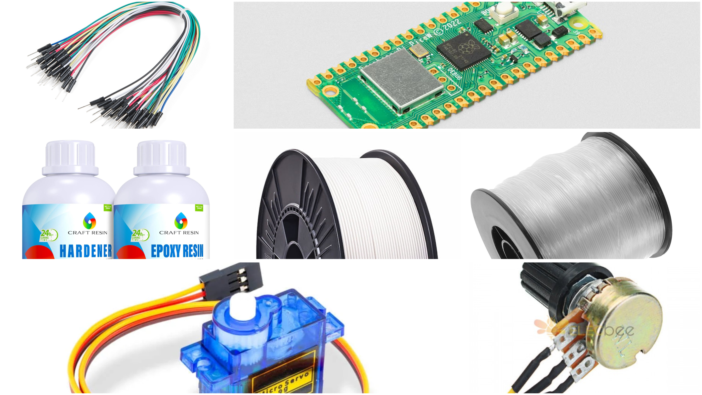

AIM OF PROJECT
The aim of this project is to design and develop a bio-inspired robotic model of a manta ray that replicates the natural form and smooth fin movements of the real-life marine creature. The main objective is to combine nature-inspired design with modern engineering techniques to create both a functional robotic prototype and a smaller toy version of a manta ray. As a group, we began this project by brainstorming ideas and researching various marine creatures. We finalised the manta ray concept because of its unique shape, elegant movement, and potential for creative mechanical design. We started developing sketches and explored different possibilities for creating a toy manta ray with movable fins. To achieve accuracy in design, we used 3D scanning hardware and software to capture detailed anatomical features from existing manta ray models. Motion capture technology further helped us study and understand the natural fin movement, allowing us to replicate it in our design. The design and modelling process was carried out using Computer-Aided Design (CAD) software and 3D modelling tools. Haptic input devices and sculpting software enabled us to fine-tune the complex organic structure of the manta ray with better control and precision. Finally, we used 3D printing technology and resin production to fabricate the parts and assemble the prototype. The toy version features articulated fins designed to move naturally, serving as both an educational tool and a demonstration of biomimicry and mechanical articulation. This project demonstrates how nature can inspire innovative engineering solutions through advanced design, motion analysis, and modern fabrication techniques.

PROJECT SPECIFICATIONS
This project focuses on designing and developing a bio-inspired robotic model of a manta ray using university-provided technologies such as 3D scanning, 3D printing, and digital manufacturing tools. The main objective is to create a lifelike robotic prototype that closely replicates the natural shape and smooth fin movements of a real manta ray. The design process involved using 3D scanning hardware and software to capture accurate anatomical details of the manta ray. We used Onshape platform, a cloud-based 3D modelling platform, to develop and refine the digital design of the model, ensuring precision in structure and movement design. The final prototype was fabricated using 3D printing and resin production techniques available in the university's workshop facilities. This project highlights how combining biomimicry, mechanical design, and advanced digital manufacturing methods can lead to innovative solutions in underwater robotics, offering potential applications in research, exploration, and educational demonstrations.
ARTIFACT
The final artefact is a 3D-printed manta ray model designed to replicate the natural shape and smooth fin movements of a real manta ray. The model was created using PLA material and carefully designed to capture the detailed structure of the marine creature. The fins of the manta ray feature a flexible 3D-printed design that allows them to move in a lifelike manner, closely mimicking the gentle, flowing motion of real manta rays. This artefact demonstrates the use of biomimicry and 3D printing technologies to create a functional and visually accurate representation of aquatic movement in robotics.
Methods
- 3D scanning hardware and software were used not only to capture the overall shape of the manta ray but also to extract detailed skin texture patterns from existing fish models. This helped in adding a realistic surface finish to the final design.
- Onshape (3D modelling software) was used to digitally design and develop the manta ray model structure, focusing on achieving flexibility in fin design and maintaining anatomical accuracy.
- Haptic input devices and 3D sculpting software allowed for fine-tuning the organic shapes and adding surface details with precision.
- 3D printing technology (FDM) was used to fabricate all parts of the manta ray using PLA material in the university’s workshop facilities.
- Resin production techniques(Not Implemented)
By combining these methods, the project successfully developed a bio-inspired manta ray model that not only captures realistic movement but also reflects the fine surface textures found in nature.

Materials
- Poly lactic Acid (PLA) Filament
- Resin
- Servo Motors
- Switch
- Microcontroller
- Pins
- Fishing Wires
